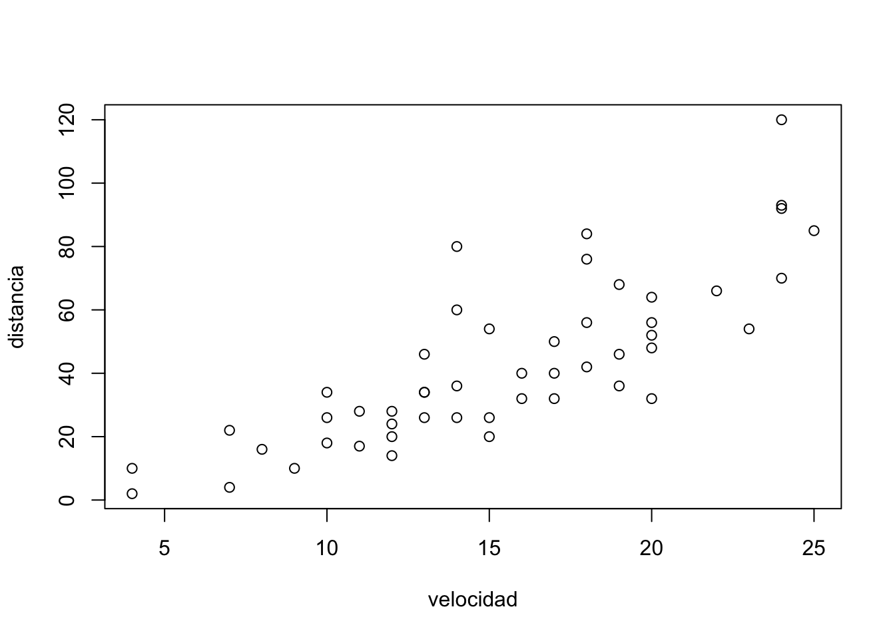

5*3+6[1] 215*(3+6)[1] 45Este material fue compilado y adaptado por José M. Avendaño teniendo parcialmente códigos y conceptos desarrollados por Diego Kozlowski y Juan Barriola para un curso de R.
Con R base nos referimos a los comandos básicos que vienen incorporados en el R, sin necesidad de cargar librerías.
5*3+6[1] 215*(3+6)[1] 45tener presente el uso de los paréntesis y el orden en que serán ejecutadas las operaciones matemáticas
Los Objetos/Elementos constituyen la categoría esencial del R. De hecho, todo en R es un objeto, y se almacena con un nombre específico que no debe poseer espacios. Un número, un vector, una función, la progresión de letras del abecedario, una base de datos, un gráfico, constituyen para R objetos de distinto tipo. Los objetos que vamos creando a medida que trabajamos pueden visualizarse en el panel derecho superior de la pantalla (el Environment).
El operador <- (Alt + Guión) sirve para definir un objeto. A la izquierda del <- debe ubicarse el nombre que tomará el elemento a crear. Del lado derecho debe ir la definición del mismo.
A <- 1Por ejemplo, podemos crear el elemento A, cuyo valor será 1. Para esto, debemos correr el código presionando Ctrl + Enter, con el cursor ubicado en cualquier parte de la línea. Al definir un elemento, el mismo queda guardado en el ambiente del programa, y podrá ser utilizado posteriormente para observar su contenido o para realizar una operación con el mismo.
A [1] 1A+6[1] 7Al correr una linea con el nombre del objeto, la consola del programa nos muestra su contenido. Entre corchetes observamos el número de orden del elemento en cuestión. Si corremos una operación, la consola nos muestra el resultado de la misma.
El operador = es equivalente a <-, pero en la práctica no se utiliza para la definición de objetos.
B = 2
B[1] 2<- es un operador Unidireccional, es decir que:
A <- B implica que A va tomar como valor el contenido del objeto B, y no al revés.
A <- B
A # Ahora A toma el valor de B, y B continúa conservando el mismo valor[1] 2B[1] 2Pueden contener cualquier estructura de datos como una matriz, un valor numérico, un texto, un vector y otras que se verán más adelante. Son creadas mediante el uso del operador de asignación.
RBase cuenta con diversas funciones que ya vienen definidas con el lenguaje de programación. Muchas de ellas son comandos básicos para realizar rutinas de programación. Otro lote de funciones, distinto a otros lenguajes, son funciones para aplicar métodos inherentes a la estadística. Cuando se vea un texto en un script que está asociado a un verbo, o proceso, y posterior al nombre, viene acompañado de un signo de inicio de paréntesis y finaliza con otro signo de cierre de paréntesis, se está en presencia de una función. En algunos casos entre ambos signos de paréntesis aparecerá un texto que puede estar entre comillas, sin comillas y en otros casos varios textos separados por comas. Cuando se da este último caso se refiere a que la función necesita distintos argumentos para poder ejecutarse.
Ejemplos:
Función sin argumento
Sys.Date()[1] "2024-11-23"Función con un argumento
head(mtcars) mpg cyl disp hp drat wt qsec vs am gear carb
Mazda RX4 21.0 6 160 110 3.90 2.620 16.46 0 1 4 4
Mazda RX4 Wag 21.0 6 160 110 3.90 2.875 17.02 0 1 4 4
Datsun 710 22.8 4 108 93 3.85 2.320 18.61 1 1 4 1
Hornet 4 Drive 21.4 6 258 110 3.08 3.215 19.44 1 0 3 1
Hornet Sportabout 18.7 8 360 175 3.15 3.440 17.02 0 0 3 2
Valiant 18.1 6 225 105 2.76 3.460 20.22 1 0 3 1Función con múltiples argumentos
# asignación variables
velocidad <- cars$speed
distancia <- cars$dist
# crear un gráfico de tipo scatter plot (diagrama de dispersión )
plot(velocidad, distancia)
Cuando queremos saber con cuál tipo de datos estamos trabajando necesitamos usar la función class()
```{r data_types, include=TRUE, echo=TRUE
Las funciones son series de procedimientos estandarizados, que toman como imput determinados argumentos a fijar por el usuario, y devuelven un resultado acorde a la aplicación de dichos procedimientos. Su lógica de funcionamiento es:
funcion(argumento1 = arg1, argumento2 = arg2)
paste("Pega", "estas", 4, "palabras", sep = " ")[1] "Pega estas 4 palabras"#Puedo concatenar caracteres almacenados en objetos
A= 'nombre'
B= 'apellido'
C= 'ciudad'
paste(A, B, C, sep = "**")[1] "nombre**apellido**ciudad"# Paste0 pega los caracteres sin separador
paste0(A, B, C)[1] "nombreapellidociudad"1:5[1] 1 2 3 4 5sum(1:5)[1] 15mean(1:5, na.rm = TRUE)[1] 3Son colecciones de elementos que tienen que ser exclusivamente del mismo tipo, de la misma clase. Se usa la c () para declarar un vector. Los elementos que conforman el vector van separados por comas. Los vectores pueden, y es lo más común, les asignamos nombre como lo vimos con las variables. Incluso podemos tener vectores con una solo elemento (que de por si son las variables que ya estudiamos).
Si queremos preguntar lo hacemos con la función is.numeric()
x=10
is.numeric(x)[1] TRUEEn la lámina anterior vimos que el valor que retornó class(x) fue “numeric”.
x <- 2
class(x)[1] "numeric"y <- 2L
y[1] 2class(y)[1] "integer"Ejemplo de una operación:
x <- 2.7
class(x)[1] "numeric"y <- 3L
class(y)[1] "integer"Lógicos: Sirven para representar datos que solo pueden tener uno de estos dos valores
# Redefinimos los valores A y B
A <- 10
B <- 20
# Realizamos comparaciones lógicas
A > B[1] FALSEA >= B[1] FALSEA < B[1] TRUEA <= B[1] TRUEA == B[1] FALSEA != B[1] TRUEC <- A != B
C[1] TRUEComo muestra el último ejemplo, el resultado de una operación lógica puede almacenarse como el valor de un objeto.
x <- 2.7
y <-3L
z <- x==y
z[1] FALSEclass(z)[1] "logical"acabamos de usar el operador ‘==’ que nos sirve para hacer una comparación de igualdad entre dos objetos. Lo que estamos es preguntando si son iguales el uno al otro y la respuesta que obtenemos es de tipo lógica booleana TRUE o FALSE
TRUE*4[1] 4FALSE*2[1] 0acabamos de ver coerción. Forzar a un cambio de un tipo de dato en otro tipo de dato. Los TRUE pueden ser interpretados mediante la coerción como 1 y los FALSE como 0
# dos es igual a 3?
2==3[1] FALSE# dos es distinto de tres? (tener presente que el !
# precediendo al igual quiere decir que es lo inverso
# al igual, es decir, distinto)
2!=3[1] TRUE#dos es menor que tres?
2<3[1] TRUE#juan es igual a pedro? (hablamos del texto)
'juan'=='pedro'[1] FALSE# el texto jose es igual a jose?
'jose'=='jose'[1] TRUE#dos es igual a dos?
2==2[1] TRUE# a es menor que b?
'a'<'b'[1] TRUE# a es mayor que 8?
'a'>8[1] TRUE# a es igual a 1?
'a'==1[1] FALSEnombre <- 'jose miguel'
no_es_numero <- '2'
no_es_numero[1] "2"class(no_es_numero)[1] "character"nchar(x)[1] 3nchar('hola')[1] 4nchar(5)[1] 1nchar(1532)[1] 4La función Date solo almacena la fecha calendario
La función POSIXct puede almacenar en conjunto hora y fecha
Las fechas se representan, en cualquiera de los casos como la cantidad de días (date) o segundos (POSIXct) que han transcurrido desde el 1 ero de enero de 1970.
fecha1 <- as.Date('2020-01-31')
fecha1[1] "2020-01-31"class(fecha1)[1] "Date"as.numeric(fecha1)[1] 18292fecha2 <- as.POSIXct('2020-01-31 11:15')
fecha2[1] "2020-01-31 11:15:00 -04"as.numeric(fecha2)[1] 1580483700class(fecha2)[1] "POSIXct" "POSIXt" numeros <- c(1,2,5,7)
numeros[1] 1 2 5 7class(numeros)[1] "numeric"textos <- c('juan','eliana','maria')
class(textos)[1] "character"textos[1] "juan" "eliana" "maria" logicos <- c(TRUE, FALSE, TRUE)
class(logicos)[1] "logical"is.numeric(numeros)[1] TRUEis.logical(textos)[1] FALSEis.character(textos)[1] TRUEunico <- c('aula')
unico[1] "aula"class(unico)[1] "character"errado <- c('texto', 1)
errado[1] "texto" "1" class(errado)[1] "character"errado <- c('texto', 1)
errado[1] "texto" "1" class(errado)[1] "character"#aplicó la coercionTodo lo que existe dentro de R es un objeto: funciones, vectores, etc. En R se puede trabajar con una gran cantidad de objetos distintos tanto en su tipo como tenerlos dentro de una sesión de trabajo.
Estas son algunos de los objetos que contienen datos con los cuales trabajaremos a lo largo del curso.
No obstante, existen estructuras más complejas que no son de tipo tabular que no serán abordadas como la raster layers.
R es sensible a mayúsculas y minúsculas, tanto para los nombres de las variables, como para las funciones y parámetros.
El numeral # se utiliza para hacer comentarios. Todo lo que se escribe después del # no es interpretado por R. Se debe utilizar un # por cada línea de código que se desea anular
Los corchetes [] se utilizan para acceder a un objeto:
el signo $ también es un método de acceso. Particularmente, en los dataframes, nos permitira acceder a una determinada columna de una tabla
Los paréntesis() se utilizan en las funciones para definir los parámetros.
Las comas , se utilizan para separar los parametros al interior de una función.
Hay algunas cosas que tenemos que tener en cuenta respecto del orden del ambiente en el que trabajamos:
getwd(), es hacia donde apunta el código, por ejemplo, si quieren leer un archivo, la ruta del archivo tiene que estar explicitada como el recorrido desde el Working Directory.Es importante que mantengamos bien delimitadas estas cosas entre diferentes trabajos, sino:
Rstudio tiene una herramienta muy útil de trabajo que son los proyectos. Estos permiten mantener un ambiente de trabajo delimitado por cada uno de nuestros trabajos. Es decir:
Un proyecto no es un sólo script, sino toda una carpeta de trabajo.
Para crearlo, vamos al logo de nuevo projecto (Arriba a la derecha de la panatalla), y elegimos la carpeta de trabajo.
En caso de querer remover un objeto (todo lo que existe dentro del programa que estamos ejecutando) del “global environment” podemos usar la función rm() teniendo como argumento el nombre del objeto que queremos remover
rm(“nombre”)